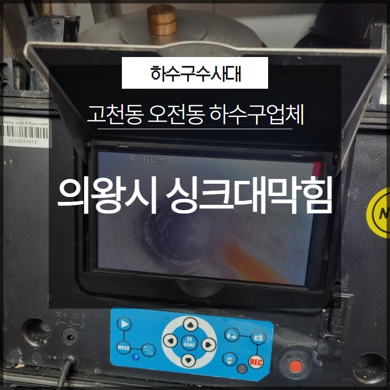
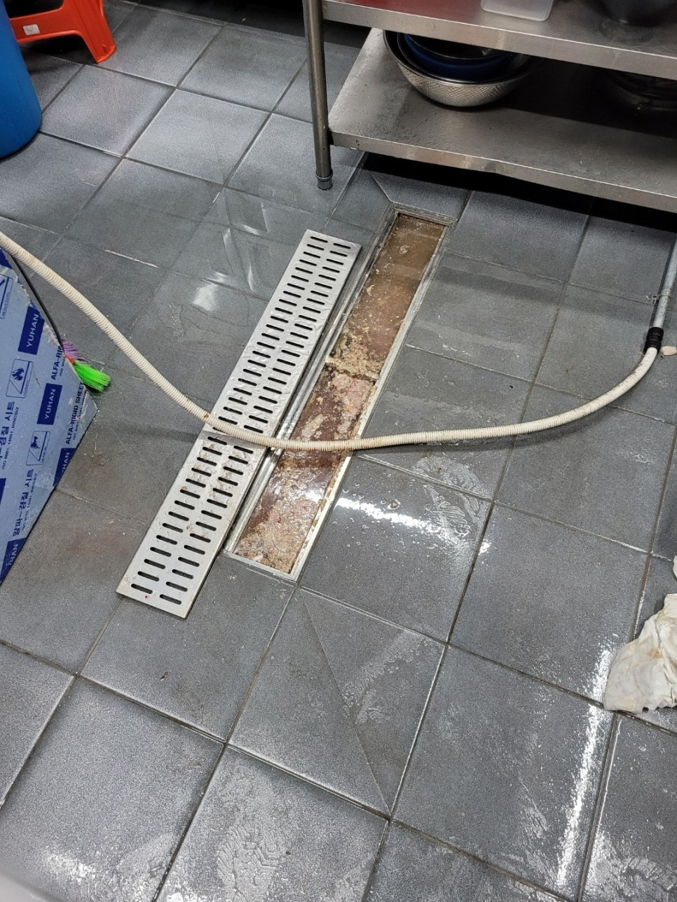
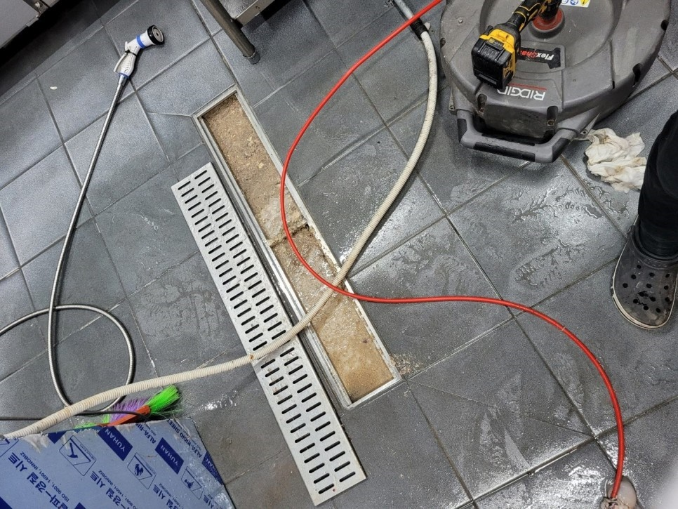
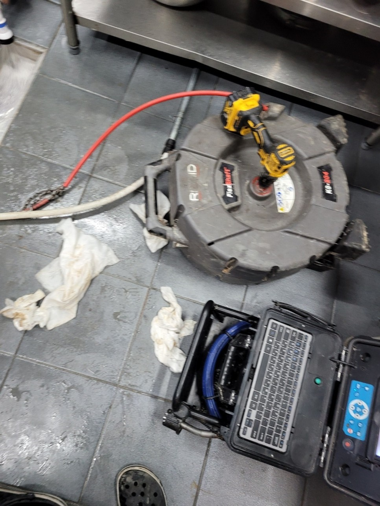
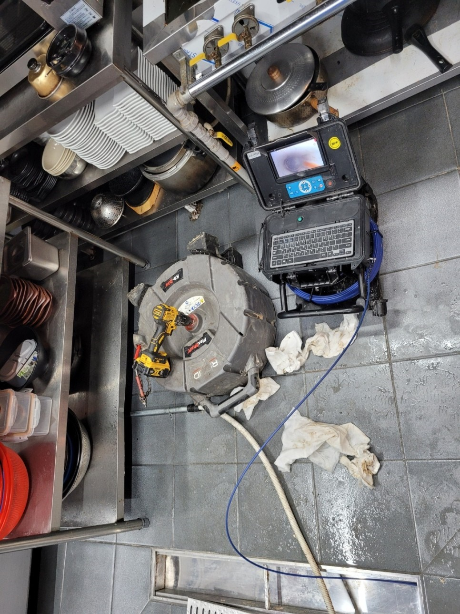
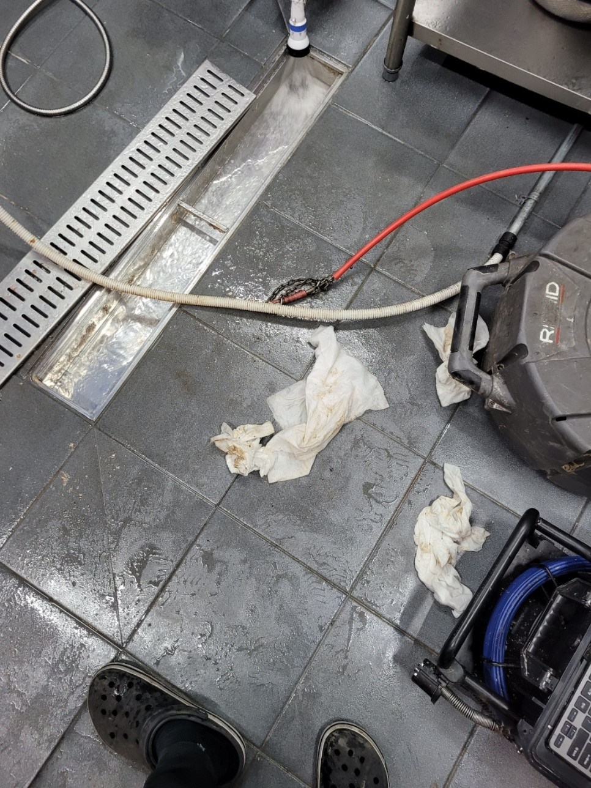
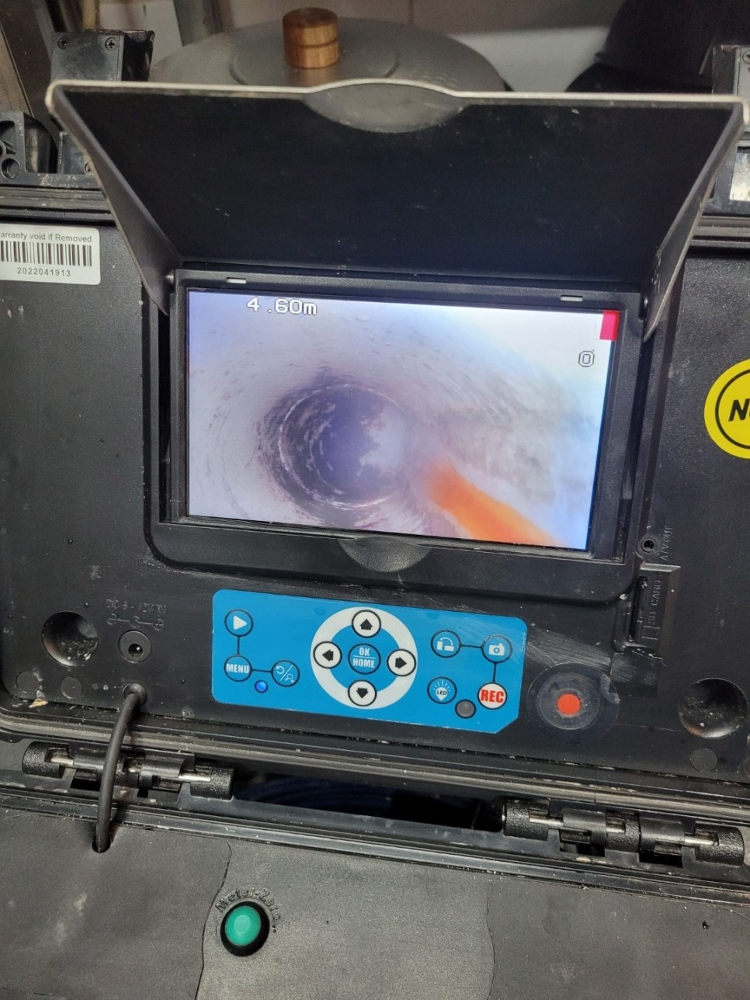

🏠 의왕시 고천동 싱크대막힘 오전동 하수구업체 궁금하시다면?
용인 싱크대막힘 전문 시공 후기

📋 작업 개요
- 위치: 용인
- 서비스 유형: 싱크대막힘, 하수구막힘, 배관막힘
- 작업 일시: 2023. 6. 3. 1:02
- 업체명: 하수구수사대 (010-5615-2118)
🔍 문제 상황
안녕하세요. 하수구수사대입니다.
배관 막힘은 누구에게나 불편함을 줄 수 있는 것이라고 할 수 있습니다. 이러한 배관 막힘을 전문으로 해결하고 있는 저희 하수구수사대에서는 여러 현장을 통해서 배관 막힘으로 인해 힘들어하시는 분들을 위해 보다 발 빠르게 뛰고 있습니다.
이번에 방문을 했던 현장은
의왕시 고천동 싱크대막힘 오전동 하수구업체 전문가로 의뢰를 해주신 곳이었는데요. 배관 막힘 현장의 후기를 통해서 막힘 발생을 어떻게 해결하게 되었는지를 알려드리는 시간을 가져보도록 하겠습니다. 우리가 일상생활을 하면서 배관 막힘은 어느 곳에서 나 발생을 할 수 있는 만큼 평소에도 주의를 하시는 것이 필요하다고 할 수 있습니다.

🔎 원인 분석
💡 전문가 진단: 이번에 방문을 했던 현장은
특히나 배관 막힘이 발생을 했을 때에는 당황하지 마시고 잘 대처를 하는 것이 중요하다고 할 수 있는데요. 오히려 급하게 해결을 하려고 하다 보면 배관 손상의 위험이나 전문 업체가 더 해결하기 힘든 상황을 발생하게 될 수 있기 때문에 주의를 하는 것이 좋습니다.
이번에 방문을 한 현장도 고객님의 불편함을 줄이고자 보다 빠른 조치를 위해 발 빠르게 해결을 해드렸는데요. 의왕시 고천동 싱크대막힘 오전동 하수구업체 방문 현장에서는 한 상가에 있는 식당의 싱크대가 막히게 되면서 연락을 주신 곳이었습니다.
현장에 도착을 했을 때 이미 싱크대 쪽에서는 악취가 올라오고 있는 상황이었는데요. 얼마 전부터는 하수구를 통해서 물을 흘려보냈는데도 잘 내려가지 않는 것이 반복이 되더니 아예 막혀버렸다고 하셨습니다.
식당 같은 경우에는
주방에서 항상 음식을 하고 물을 사용하는 만큼 막힘이 발생을 하게 되면 불편함이 크다고 할 수밖에 없습니다. 당장에 영업에도 손실이 있을 수 있는 만큼 막힘 발생 시 빠르게 조치를 취하시는 것이 필요하다고 할 수 있는데요.

🔧 작업 과정
현장에 도착한 저희는 가장 먼저 하수구 막힘이 발생한 싱크대 쪽으로 가서 배관 내부의 상황을 확인하게 되는데요. 전문 업체에서는 배관 내시경 장비를 이용해서 내부를 확인을 하기 때문에 정확한 원인 파악을 할 수 있는 것입니다.
그러므로 내부의 상황을 알지 못하는 상태로 혼자서 해결을 하려고 하다 보면 그러한 방법은 임시방편일 뿐 머지않아 또다시 막힘을 발생하게 될 수밖에 없을 것입니다. 결국에는 전문가의 도움이 필요하다고 할 수 있는데요 배수구가 막히게 되는 원인으로는 여러 가지가 있지만 배관의 상태가 오래되어서 막힘이 발생을 할 수도 있습니다.
이번 의왕시 고천동 싱크대막힘 오전동 하수구업체 현장의 경우도 대형 식당이다 보니 아무래도 이물질들의 영향이 있기도 했지만 배관의 노후의 영향도 막힘이 발생하게 된 원인 중의 하나였습니다.
평소에 전문 업체를 통해서
정기적으로 배관을 관리를 하게 되면 이러한 배관 막힘의 발생 빈도가 낮아진다고 할 수 있습니다. 하수구의 물이 잘 내려가지 않게 될 때에는 먼저 배수관의 상태를 점검을 해보고 전문가를 통해서 상태를 상의해 보는 것이 좋습니다.
현장에서 배관 내시경을 통해서 배관 내부의 상황을 먼저 확인을 해보니 배관 내부에는 커다란 이물질 덩어리들과 함께 배관 벽면 쪽으로도 오래된 음식 찌꺼기들이 붙어있는 것을 확인하였습니다. 배관 내부의 이물질들을 제거를 하기 위해서 본격적인 장비 세팅과 함께 작업을 시작하였는데요.
이렇게 전문 업체의 경우는 내부의 원인을 확인을 한 후에 이물질 제거를 하는 작업을 하기 때문에 근본적인 해결이 가능하다고 할 수 있습니다. 배관 내부에 있는 커다란 이물질들을 먼저 제거를 한 후에 배관 벽에 있는 찌꺼기들도 모두 제거를 하였는데요.


✅ 작업 완료
제거된 이물질들이 배관 안으로 다시 들어가지 않도록 주의를 하고 내부에 있는
이물질들이 완전히 제거되는 모습을 확인한 후에 작업을 마무리하였습니다.




⚠️ 주방 싱크대 배관 막힘 예방 수칙
- ✅ 기름기가 묻은 식기나 프라이팬은 설거지 전 키친타올로 반드시 기름때를 닦아내세요.
- ✅ 주기적으로 싱크대 개수대에 뜨거운 물을 가득 받아 한 번에 내려 배관 내부 기름을 씻어내세요.
- ✅ 배수구 거름망을 미세한 필터로 사용하시고 음식물 찌꺼기가 틈으로 새어 들지 않게 관리하세요.
- ✅ 베이킹소다와 식초를 뜨거운 물과 함께 일주일에 한 번씩 부어주면 배관 살균과 막힘 예방에 좋습니다.
💡 핵심 정리
- 확실한 장비 작업(내시경 점검 및 샤프트 스케일링)으로 원인을 뿌리 뽑습니다.
- 작업 후 1년 이내에 동일한 부위 재발 시 100% 무상 A/S 서비스를 보장합니다.
- 서울 · 경기 · 인천 전 지역에 24시간 언제든 긴급 출동할 수 있도록 항시 대기 중입니다.
❓ 자주 묻는 질문 (FAQ)
🚨 용인 싱크대막힘 문제로 고민이신가요?
정확한 원인 진단과 확실한 시공으로 재발 없는 해결을 약속드립니다.
24시간 긴급 출동 | 서울 · 경기 · 인천 전지역 | 1년 내 재발 시 무상 A/S